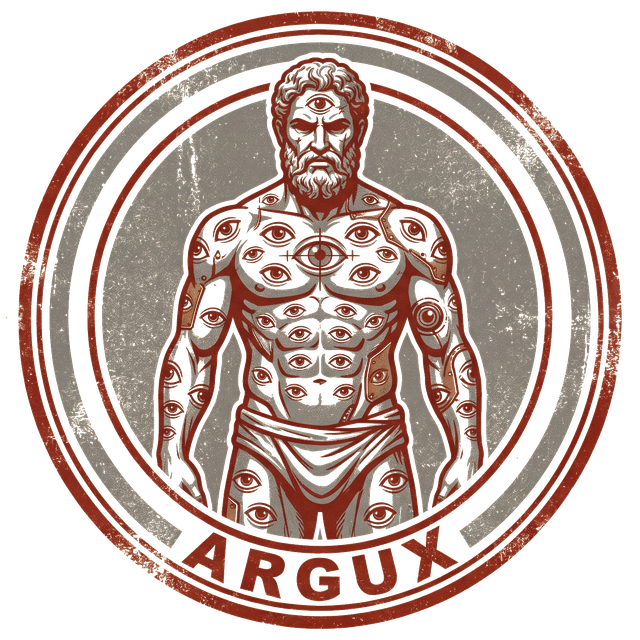

Tres pasos. La primera vez tarda unos minutos porque descarga la app.
ARGUX-Setup.exe. Acepta los permisos. Crea un ícono ARGUX en tu escritorio.La app arranca en blanco. Un asistente te guía:
Tu usuario y contraseña. El botón "Probar conexión" confirma que funciona y te dice cuántas unidades ve tu cuenta.
Nombre, prefijo de ruta y ciudad. Es lo que define tu territorio.
Descubre tus GPS desde TCVSAT, y si quieres alertas, pega un token de Telegram en Argux Admin → Credenciales.
Solo. Cada vez que abres ARGUX busca y descarga la última versión. No reinstalas nada y tus datos se quedan.
Asegúrate de que Docker Desktop esté corriendo (ícono de ballena en la barra de tareas). Ábrelo, espera a que diga "Engine running", y vuelve a abrir ARGUX.
No. Todo corre en tu propia laptop. La app solo habla con TCVSAT para bajar los GPS.
Solo para instalar Docker Desktop la primera vez (puede pedir un reinicio). ARGUX en sí se instala en tu usuario.